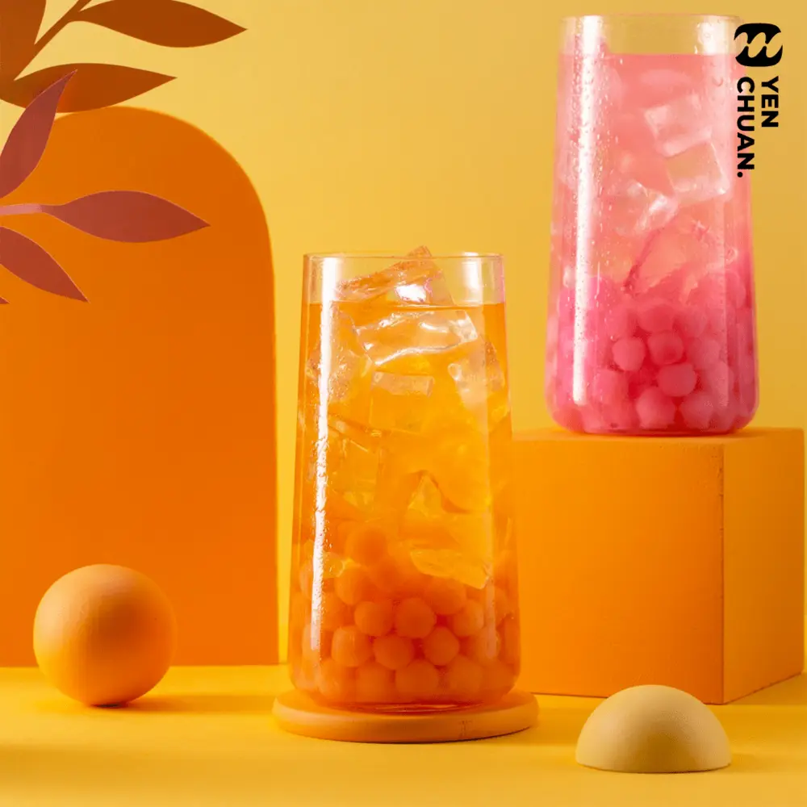
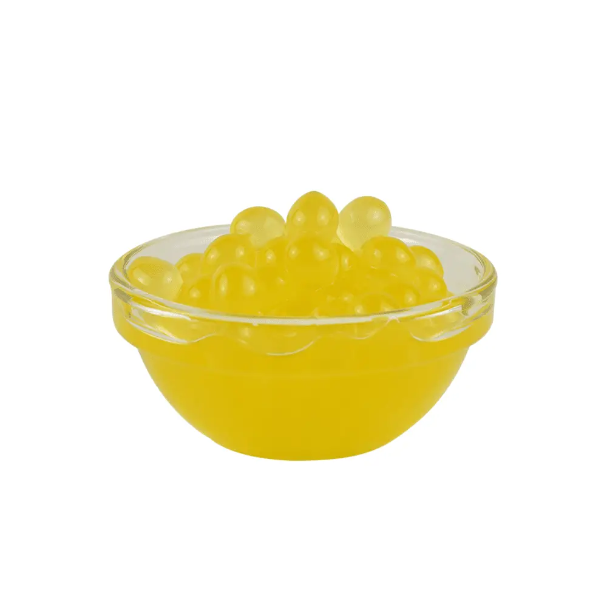
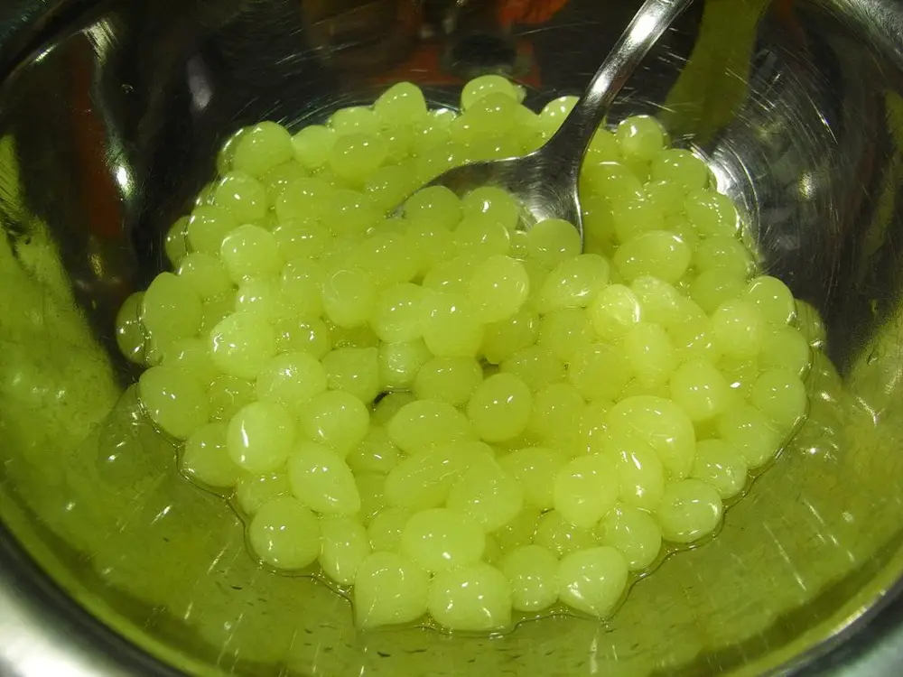
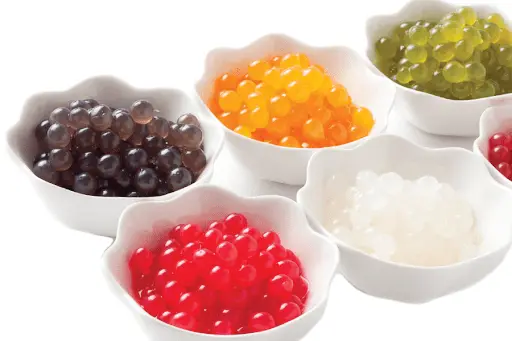

Articles / Tips & trends
Know your toppings: Popping boba
2024-06-16 · Tips and Trivia, Tips and Trivia

When you think of bubble tea toppings, what comes to your mind? Aside from the classic tapioca pearls, you’d probably think of popping boba – colourful, flavourful boba with an exciting pop!
Indeed, these playful pearls are a mainstay in many boba tea shops. However, have you ever thought about what gives them their iconic bursting sensation? Read on to learn more about this unique, delicious topping!

What is popping boba?
Simply put, popping boba are small spherical “bubbles” filled with flavoured syrups. As you eat the boba the thin membrane breaks, releasing the fruity goodness inside!
These popping pearls not only lend a splash of colour and flavour to bubble tea, but also a playful mouthfeel. No wonder why it’s a popular topping for bubble tea, fruit teas and other summer treats!
How do you make popping boba?
Making popping pearls relies on a process called “Spherification”. Have you heard of molecular gastronomy? In fact, the fake caviar common to it is made with the same method!
First, the fruit juice is mixed with calcium lactate and other ingredients, then the mixture dripped into a solution containing sodium alginate. In this process, the two components react with each other to form a thin film.
Since only the surface of the droplet reacts with the solution, the film keeps the delicious contents enclosed within. As the film is so thin and crispy, it gives a satisfying “pop”!
Voila, you now have a perfectly-shaped boba ready to be served!


What flavours are available?
These bursting pearls are available in a wide variety of flavours!
Aside from the classics such as mango, strawberry, green apple and lychee, there are also more unique choices such as chocolate, yogurt and coffee. Who says these pearls are only for fruit teas?
No matter what kind of drink you’re making, there’s sure to be a perfect match for it!
Give it a try!
Can’t get enough of those bursting boba? No need to make it yourself, we got you covered – in different packaging formats to boot!
Get in touch to get started!